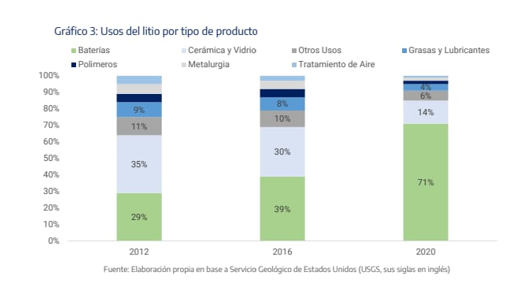
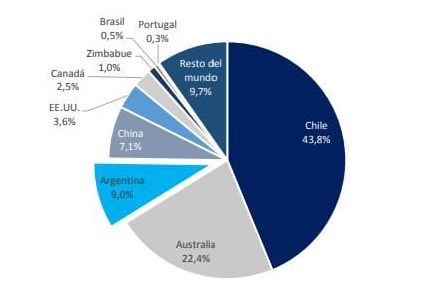
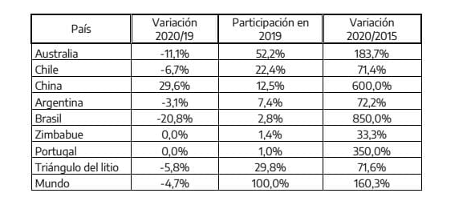
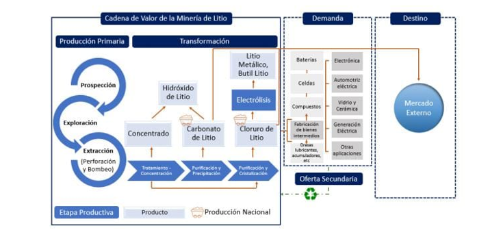
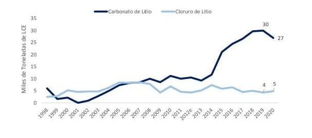
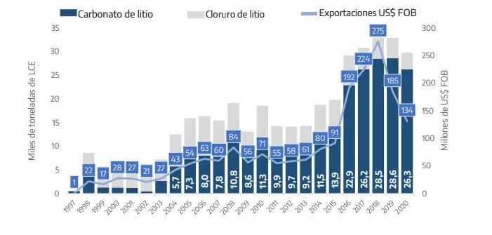

Litio en Argentina
Presentacion
En este informe, se investiga el litio desde una perspectiva de cómo afecta a nuestro país desde lo económico hasta lo natural, de la forma más integra posible para que los ciudadanos estén al tanto o por lo menos tengan conocimientos de los datos actuales de nuestras reservas de litio, ya que somos el cuarto productor más grande de este recurso en todo el mundo, luego de Australia, chile y china, formando parte del triángulo del litio junto a Bolivia y chile, con cerca del 65% de los recursos mundiales del litio. No obstante, argentina cuenta con un enorme potencial para aumentar su participación en la oferta global del mineral. Al mismo tiempo, presenta el desafío de mejorar la eficiencia y la sustentabilidad ambiental de las técnicas evaporíticas implementadas actualmente, como también destinar recursos a la investigación para el desarrollo de nuevos métodos que permitan aprovechar el resto de los elementos presentes en la salmuera.
Argentina a pesar de ser un país el cual este mal económicamente, es poseedor de grandes reservas y yacimientos mineros, tanto así que en 2003 le reporto al país ganancias por u$1200 millones, por los 5 millones de toneladas de minerales que se exportaron. La argentina tiene al menos 40 grandes yacimientos minerales, y está en el puesto 6 en el ranking mundial de recursos mineros. Por más de que seamos poseedores de dicha cantidad de recursos y yacimientos no es posible solventar o mantener nuestra economía. Nuestra investigación se basará o concentrarásobre la producción y utilización del litio en nuestra argentina.
Nosotros hemos elegido este tema ya que nos parece interesante la idea de informarnos sobre los recursos de nuestro país desde un punto de vista tanto económico, natural y social.
Reseña Crítica
El quimico sueco Johan augustarfwedson descubrió el elemento conocido como litio, nombrado asi para indicar que dicho elemento proviene de un mineral.
El litio, al ser el mas ligero de todos los metales, se utiliza en el tratamiento de aire, baterías, cerámica, vidrio, metalúrgicas, productos farmacéuticos y polímeros. Actualmente se implementan en la elaboración de baterías recargables de ion-litio, las cuales son particularmente importantes en los esfuerzos para reducir el calentamiento global, ya que permiten proveer de electricidad a vehículos a partir de fuentes renovables en lugar del uso de combustibles fósiles. Desde entonces, el desarrollo de las mencionadas tecnologías ha sido continuo y su mejoramiento es constante. En este sentido, el litio ha cobrado un importante papel en la sociedad moderna y, por tanto, la demanda del mismo se encuentra sujeta a sus crecientes aplicaciones.
Tal como se ha comentado al inicio del apartado, el litio no se encuentra como un elemento libre en la naturaleza. Una de las fuentes principales para la obtención de este mineral son las salmueras, aunque también se pueden extraer de minerales graníticos de pegmatita, es decir, de roca dura.
Proceso productivo del litio
Tal como se adelantó en el apartado anterior, existen 2 tipos de depósitos que son la fuente de explotación actual del litio. Estos son las pegmatitas (mineral) y los salares.
En esta sección se procederá a describir, de manera simplificada, cada uno de los procedimientos necesarios para cada tipo de explotación. Si bien cada tipo de proceso tiene sus particularidades, en ambos casos, la fase minera inicia con una etapa de prospección, continua con la exploración y, de resultar favorables las anteriores, se avanza a las etapas de evolución económica preliminar, perfectibilidad, y factibilidad, antes de decidir la explotación. Esta son las etapas necesarias, a modo de síntesis, para encontrar la cantidad de recursos en un área y los métodos de extracción y beneficio que hagan económicamente factible su aprovechamiento. Si esta fase, junto con el resto de las condiciones ambientales, sociales y coyunturales resultan positivas para la ejecución de un proyecto, se da lugar a las tareas de acceso al mineral, en función de sistema de exploración diseñado y a la construcción de una planta de procesamiento para la obtención de un producto final.
Panorama Mundial
Demanda
Tal como se aprecia en el grafico 2, en los últimos años se ha observado un aumento importante en la demanda del litio. Este hito se reflejó en el incremento del precio internacional como consecuencia de las tensiones entre una escasa oferta y una creciente demanda de baterías, debido a su capacidad cada vez más eficiente de almacenaje de energía. El 2020, fue un año donde la demanda agregada del litio disminuyó, debido a que este mineral está fuertemente ligado a la demanda industrial, que se vio afectada por el contexto de pandemia.
La demanda del litio puede ser escindida en dos categorías generales: usos tradicionales y baterías recargables, principalmente destinadas a vehículos eléctricos.
Dentro de la categoría usos tradicionales se encuentran vidrios y cerámicas, donde el litio otorga determinados beneficios, como mayor adhesión y dureza. Otro clásico es el de aplicación a grasas y lubricantes para lograr mayor manipulación de los materiales en contextos térmicos adversos. También, se aplica en diversas fases de la cadena de valor por las industrias plásticas, producción de medicamentos y cuidado de la salud, secado industrial y placas de blindaje, entre otros.
Los usos relacionados con las baterías están en estrecha relación con los dispositivos electrónicos, por ejemplo, las baterías de dispositivos móviles, los controladores de consolas de juego o dispositivos médicos u otros relacionados con la industria de la salud, y las destinadas a la electro movilidad.
En el grafico 3 se detallan los principales usos del litio por tipo de producto, y se puede apreciar que, a partir de las finalización de la primera mitad de la década de 2010, las baterías comienzan a tener un lugar preponderante entre los usos.
El segundo uso más importante después de las baterías es en cerámicas y vidrios, incluso hasta los primeros años de la década pasada, la demanda para la utilización en el proceso de producción de este tipo de bienes fue mas importante que la tracción por parte de las baterías. El auge de la demanda de autos eléctricos como alternativa más amigable con el medio ambiente y la masificación de smartphones condujeron a que el motor principal de la demanda de litio, en la actualidad, sea para la producción de la batería.
Al analizar los tipos de productos, se puede observar que el mercado está dividido en dos grandes categorías, por un lado, los carbonatos de litio y por el otro los hidróxidos. Es así como la demanda de este mineral se divide, aproximadamente, en un 70% carbonatos, 25% hidróxidos y el restante 5%, otros tipos de litio. Cabe destacar que dentro de cada uno de estos dos productos existen subproductos debido al grado de pureza alcanzado. Es así como se puede encontrar el grado técnico (pureza menor a 99,5%) o batería (pureza mayor igual a 99,5), por lo que puede decir que la demanda de carbonatos se compone de 23%-77% y los hidróxidos, 35%-65%, respectivamente.
Como conclusión, las perspectivas de la demanda de litio son positivas en torno al desarrollo de la electromovilidad y la necesidad creciente de baterías para la industria electrónica. En línea con los Objetivos de Desarrollo Sostenible hacia 2030, donde se plantea la necesidad de alcanzar la sostenibilidad ambiental como prioridad, los gobiernos incentivan la adopción de medidas tendientes a la vinculación con el cuidado del medio ambiente y, como consecuencia, la utilización de autos eléctricos que requieren, cada vez más, baterías con mayores capacidades de almacenar energía. Sin embargo, existen riesgos económicos que deben ser internalizados.
Las crisis económicas representan una caída de demanda de litio; la gran volatilidad de precios puede ser perjudicial para la industria; el grado de sustituibilidad que posee el recurso en su uso para baterías puede desembocar en innovaciones que requieran la mínima cantidad de litio o incluso la sustitución total por baterías de potasio-ion o la implementación del hidrógeno verde como combustible renovable.
Recursos y reservas
Las reservas a nivel mundial se ubicaron en 111,78 millones de toneladas LCE. Cuando se habla de reservas, se hace referencia a una porción de los recursos de litio existentes, que se conocen con un alto grado de certidumbre y a los que luego de aplicarles los factores modificadores, al momento de la evaluación resulta económicamente viable su explotación. Teniendo esto en cuenta se puede apreciarcómo, al año 2020, las principales reservas de litio del mundo se encuentran en Chile, quien explica el 43,8% de las mismas; le sigue Australia con el 22,4% y, en tercer lugar, Argentina, explicando el 9% de las reservas a nivel mundial. Estos valores están fuertemente vinculados a la cantidad y calidad de los estudios realizados en la zona, que se traducen en grados de certidumbre sobre la explotación de los mismos.
Composicion de las reservas a nivel mundial
En la misma línea, si se analizan las reservas por el tipo de fuente que les da origen, se puede apreciar como el 58% de las mismas se encuentran en salares, 26% en rocas pegmatíticas o granitos, 7% en arcillas y el 5% restante pertenece a otras fuentes como las zeolitas, salmueras geotermales e hidrocarburíferas.
El caso de Argentina
La República Argentina cuenta con larga tradición en el sector minero. Así fue como sucesivas leyes tendientes a regular el sector tuvieron lugar a lo largo de la historia. El litio como recurso natural comenzó a explotarse en la década de 1980, pero se aceleró la intensificación en la primera y segunda década del 2000. A continuación, se menciona brevemente el marco jurídico que subyace al recurso y a la industria, para luego hacer un recorrido por la historia de su explotación.
El marco normativo del litio comienza en el Artículo 124 de la Constitución Nacional, que establece que “... Corresponde a las provincias el dominio originario de los recursos naturales existentes en su territorio”. Por ello los recursos naturales poseen carácter público y pertenecen a la soberanía del Estado, de acuerdo al lugar donde se encuentren ubicados. Por ende, son las Provincias las que cuentan con la capacidad para regular su uso y su disposición en beneficio de la sociedad, contando con la potestad para otorgar concesiones sobre las pertenencias mineras de sus territorios.
En un segundo nivel de jerarquía se encuentra el Código de Minería (Ley 24.585) que regula los derechos, obligaciones y procedimientos referentes a la adquisición, explotación y aprovechamiento de las sustancias minerales, aludiendo a las minas como una institución jurídica de individualidad propia. Asimismo, el Código de Minería clasifica las minas conforme las sustancias minerales que contienen, y en el caso de los minerales metálicos, solo podrán explotarse en virtud de concesión legal.
En lo concerniente a la cuestión minero ambiental, en base a lo preceptuado por la ley 24.585,incorporó en la Sección Segunda del Título XIII al Código de Minería para regular la protección ambiental para la actividad.
A la actividad minera le son aplicables las mismas disposiciones del Régimen Tributario General, con las modificaciones que establece la Ley de Inversiones Mineras (Ley 24.196), que otorga determinados beneficios tributarios para su promoción y cuya Autoridad de Aplicación es la Secretaría de Minería de la Nación. Dicha ley se complementa con su decreto reglamentario N° 2686/93 y la normativa reglamentaria que dicta en su consecuencia la Autoridad de Aplicación.
Entre los beneficios, podemos mencionar el otorgamiento de Estabilidad fiscal sujeto a la expedición del certificado respectivo y cuyo efecto operará a partir del momento de presentación de la factibilidad técnico-económica del proyecto (o ampliación de uno existente) por 30 años. La mencionada estabilidad abarca impuestos directos, tasas y contribuciones impositivas, derechos, aranceles u otros gravámenes a la importación o exportación del ámbito nacional, provincial o municipal. Es dable mencionar que el beneficio de estabilidad fiscal no abarca a los procesos industriales.
Por su parte, la ley N° 24.196 beneficia a los sujetos mencionados en su artículo 2, con la posibilidad de deducir del impuesto a las Ganancias los gastos de inversión en prospección y exploración, sin perjuicio del tratamiento que como gasto o inversión tenga el régimen general del tributo. También cuenta con la posibilidad de solicitar la devolución del Impuesto al Valor Agregado originado por la compra de bienes y/o servicios destinados a la exploración; posee un Régimen optativo de amortización acelerada, Exención de tributos, tasas y aranceles para la importación de bienes de capital e insumos; Previsión especial para cuidado del ambiente, deducible hasta el 5% de los costos operativos y de beneficio, entre los incentivos tributarios más importantes.
En lo que respecta a producción, Argentina se posiciona en 4° lugar en la producción mundial del litio con el 7,4% del market share en el año 2019, después de Australia (52,2%), Chile (22,4%) y China (12,5%).Estos valores mostraron variaciones durante el año 2020 y, aunque mantuvieron las posiciones del año previo, la participación de China aumentó a un 17% absorbiendo parte de la representación del mercado de Australia y Chile
Focalizando en el triángulo del litio, el mismo contiene cerca del 65% de los recursos mundiales de litio y, mediante la suma de la producción entre Argentina y Chile pueden explicar el 29,9% de la producción mundial total para el año 2019. Este valor mostró una leve caída durante el 2020 pasando a ubicarse en el 29,5%. El triángulo cuenta solamente con la producción comercial de Argentina y Chile, dado que Bolivia se encuentra en producción a escala piloto. Argentina tuvo un incremento en la producción de litio del 72,2% entre 2015 y 2020, mientras que Chile aumentó en 71,4%. En lo que respecta a la producción, Argentina actualmente produce dos variantes de Litio, el cloruro y el carbonato, tal como puede verse en el Gráfico 16. El destino de estos compuestos es el mercado externo.
Ahora bien, cada uno de ellos ha mostrado una evolución particular en cuanto a su producción en el país. Es así como el cloruro de litio fue el protagonista en la década de 1990, ya que su principal uso es industrial en las aplicaciones más tradicionales del litio, mientras que los carbonatos comenzaron a tomar relevancia a mediados de la primera década del 2000, con la masificación en el uso de dispositivos electrónicos y el auge de los autos eléctricos.
Participantes en el mercado del litio
Cadena de valor del litio en Argentina
Evolución en la produccion de los carbonatos y cloruros en Argentina
Exportación
Las exportaciones de Litio crecieron rápidamente desde el año 2000. El aumento de los precios internacionales, conocido como el “boom de los commodities”, sumado a la fuerte demanda que se comenzó a registrar en dicho período, al aumento en la producción local y a la apertura de nuevos mercados para exportar que demandaban el recurso para la fabricación de baterías, fueron las causas del crecimiento de las exportaciones de litio argentinas en los últimos 20 años.
Al analizar el precio promedio de exportación (PPE) se puede observar una tendencia alcista desde el año 1998, notándose un fuerte incremento, por arriba de la tendencia, en los cuatro años que van desde 2016 hasta 2019. En este sentido, cabe destacar que las mismas muestran una correlación directa con la evolución de los precios mostrada en la primera sección de este documento, debido a que en este período sólo dos proyectos de litio se han puesto en marcha, lo que provocó que las cantidades ofrecidas al mercado se mantuvieran relativamente estables por varios años.
En este punto, cabe destacar que el pico histórico se alcanzó en el año 2018 con el “boom del litio”, y posteriormente, con el descenso de los precios internacionales también disminuyeron los ingresos vía exportaciones. Adicionalmente, en el año 2020, como ya se mencionó en otras secciones del documento, la producción se vio afectada por las medidas aplicadas en pandemia y, en consecuencia, también se redujeron las cantidades exportadas. Esto, sumado a la caída en el precio internacional, provocó que las exportaciones alcanzaran el valor de 134 millones de US$ FOB, lo que implicó una caída del 27,5% respecto del año 2019 y del 51,3% si se lo compara con el pico del 2018.
Exportaciones argentinas 1997-2020
Conclusion
En conclusión, el informe sobre el litio en Argentina destaca la importancia de este mineral en la economía del país y su creciente relevancia a nivel global debido a su uso en baterías y tecnologías limpias. Argentina se encuentra entre los principales productores de litio a nivel mundial y posee reservas significativas.
A pesar de este potencial, el país enfrenta desafíos económicos más amplios que no pueden resolverse únicamente mediante la explotación de litio. La volatilidad de los precios internacionales y la necesidad de mantener la sostenibilidad ambiental en la extracción y procesamiento del litio son factores clave a considerar.
Argentina tiene un marco normativo sólido para regular la industria minera y ofrece incentivos para la inversión en el sector. La cooperación en el "triángulo del litio" con Chile y Bolivia representa una oportunidad estratégica para el desarrollo conjunto de estos recursos.
A medida que la demanda de litio continúa creciendo, especialmente en el sector de vehículos eléctricos, Argentina tiene la oportunidad de desempeñar un papel crucial en la transición hacia una economía más sostenible. Sin embargo, es importante abordar los riesgos económicos y ambientales, invertir en investigación y desarrollo, y mantener un enfoque en la sustentabilidad para aprovechar al máximo el potencial del litio en beneficio de la economía y el medio ambiente argentino.
Trabajo hecho por
Melina Zenon
Juani Machado
Juan Mogaburu
Manuel Perez